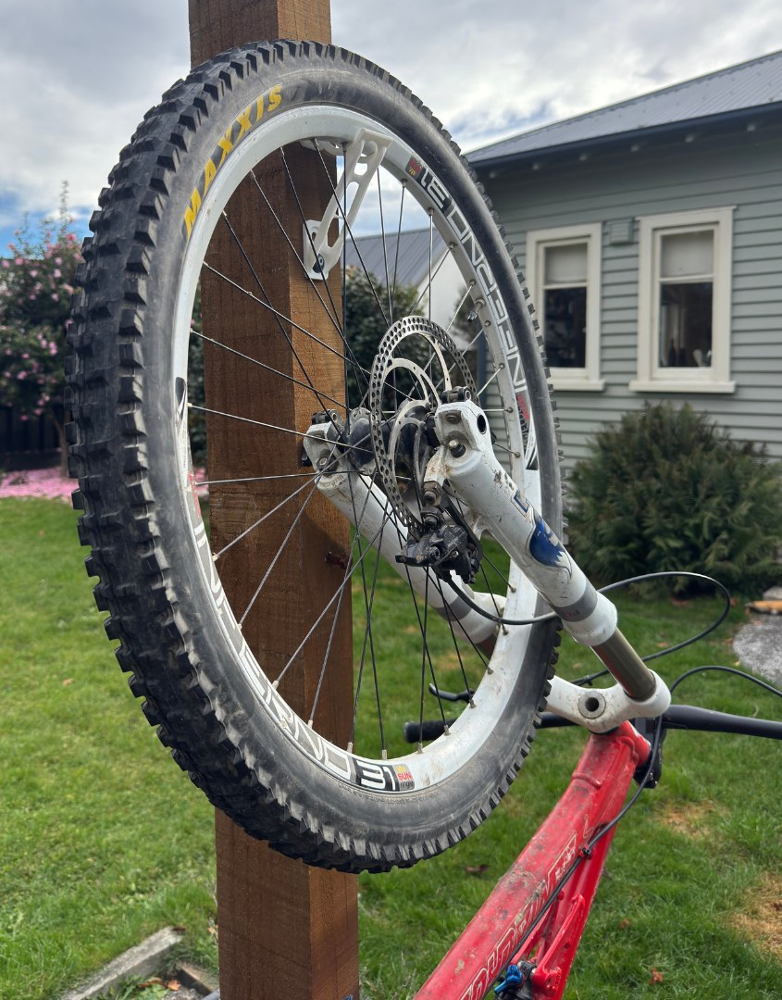
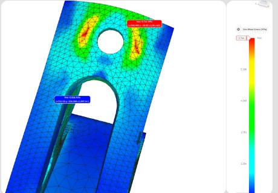
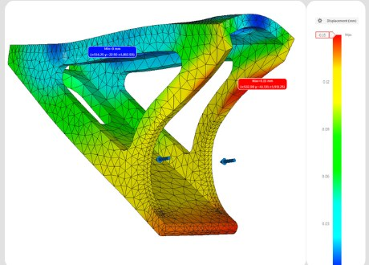
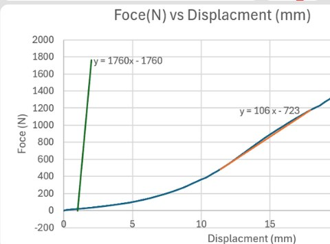
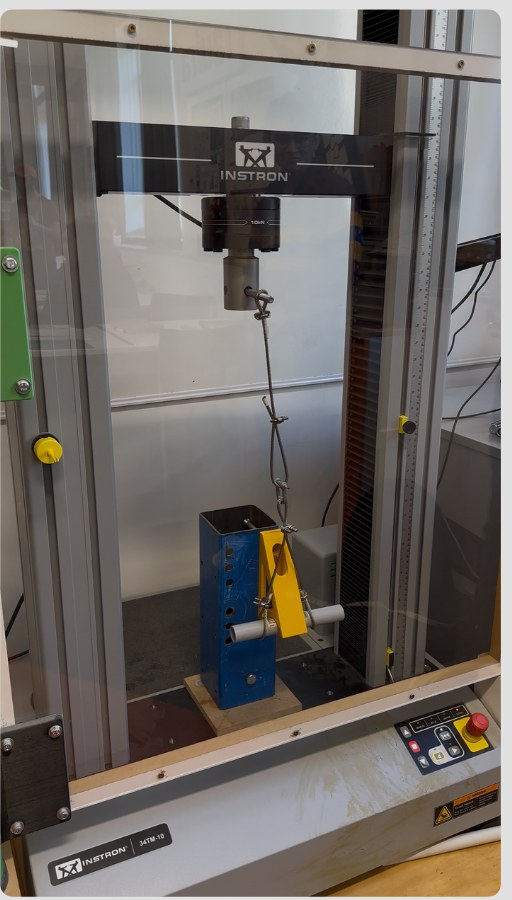
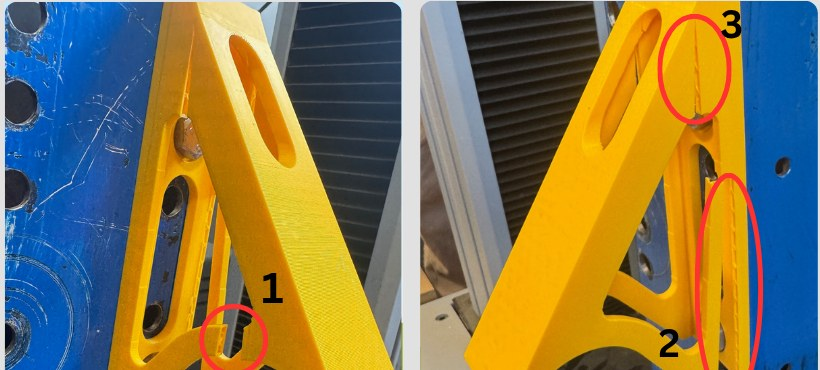
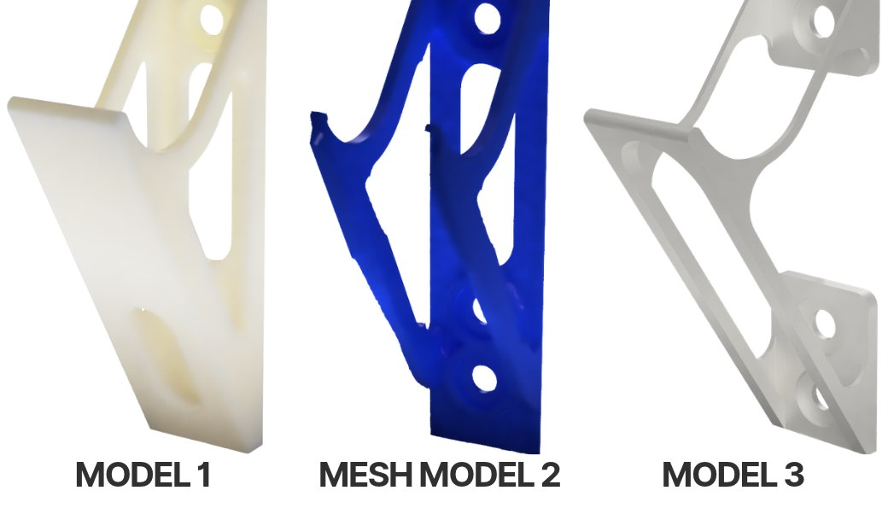
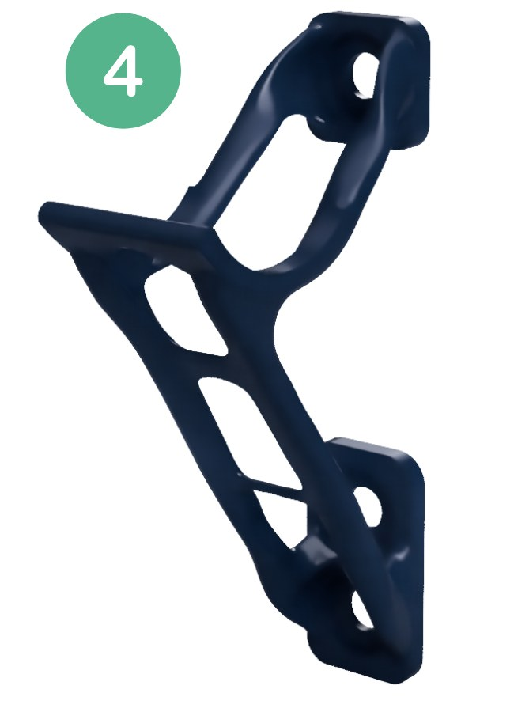
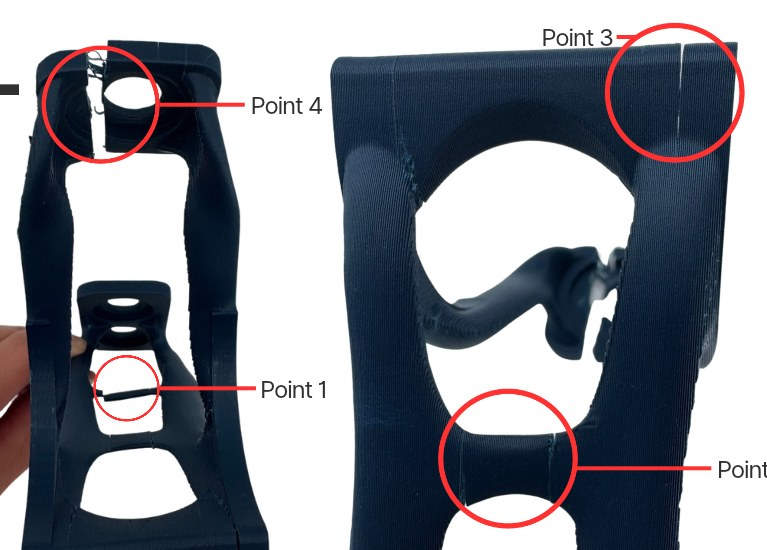
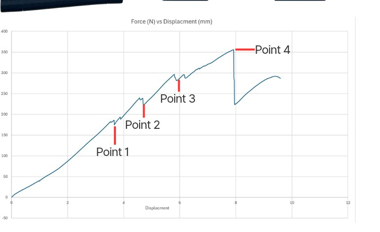

CW2 v1 rough model
The rough first model: a hook with cut-outs for the unused holes. Far too strong for the job, with a factor of safety around 1000.
A single-part 3D-printed bike hanger, simulated, load-tested, then digitally optimised to cut 67% of its mass.

Design a single-part, 3D-printed bike support that bolts to a beam at three mounting points and keeps the bike off the ground.
Our three assigned points were vertically aligned. The hanger holds the top wheel of a 150 cm road bike, letting the bike lean against the beam, so it takes up little wall space and is easy to reach. Our aim was a structurally efficient part that carries the load through those three points while using as little material as possible.
We simulated a 200 N bike load on the two top surfaces that touch the wheel, with frictionless constraints on the bolt heads and shafts at all three mounting points and a finer mesh in high-stress areas.
The simulation gave a factor of safety of 8.9 at 200 N, a theoretical failure load of 1779 N. Peak stress was at the top bolt, and maximum displacement was only about 0.15 mm, near the hook.
To validate it, we tested a half-scale print upside down in a tension machine on a rig that replicates the beam, pulling through a pipe at the hook. It began yielding at about 1100 N (after about 400 N of slack) and failed at about 1400 N, an actual factor of safety of about 5.5.
The gap came from 3D-printing layer lines, which the simulation didn't model. It cracked along layer lines at two points, one of which matched a predicted high-stress area.




Cracks formed along the printed layer lines. Without that layer-line weakness, failure would likely have happened closer to the simulated prediction.

Same three mounting points, same job, but with automated digital tools used to cut mass, material and cost.
Fusion 360's Shape Optimisation found the low-stress regions that could go while keeping the required load capacity. We turned the generated mesh into a manufacturable part with thinner arms, smoother geometry and a much smaller back plate. The centre of the back plate added mass without adding strength, and removing it alone saved about 50 g.
Mass went from 82 g to 28 g.


Starting from the shape-optimised part, we set preserve geometry (the three mounting points and the wheel support arms) and obstacle geometry (clearance for bolt heads and holes, the wheel rim, and a central cut-out). Generative design then minimised mass while keeping the structure working.
The chosen outcome weighs 27 g with a factor of safety of 1.9, a predicted capacity of 380 N.
The simulation was set up with the 200 N load at 5°, matching the slightly off-centre test rig, a refined 1.9 mm mesh everywhere, and frictionless bolt constraints for a worst case that's still realistic.
The load rose steadily to a peak of about 355 N at 7.9 mm displacement, within 6.6% of the 380 N prediction. Small drops on the graph line up with cracks forming one by one: first in the lower supports (points 1 and 2), then at the wheel support (point 3), and finally next to the bolt hole (point 4), right where the simulation predicted peak stress.
The close match between predicted and real failure validated the optimisation: two-thirds of the material was removed while the structure still performed.


Every version, from the first hook to the generative design. Each model can be rotated.
The rough first model: a hook with cut-outs for the unused holes. Far too strong for the job, with a factor of safety around 1000.
The improved model: thinner walls and material removed to make it more efficient and easier to print, with refined mounting features. This is the design we simulated and tested.
An alternative design we explored, then scrapped.
Another alternative we looked at, before going back to v2.
The manufacturable part built from the shape-optimisation mesh.
The generative design outcome: 27 g, tested to 355 N.
Pages from both coursework folios. Click a page to open it.